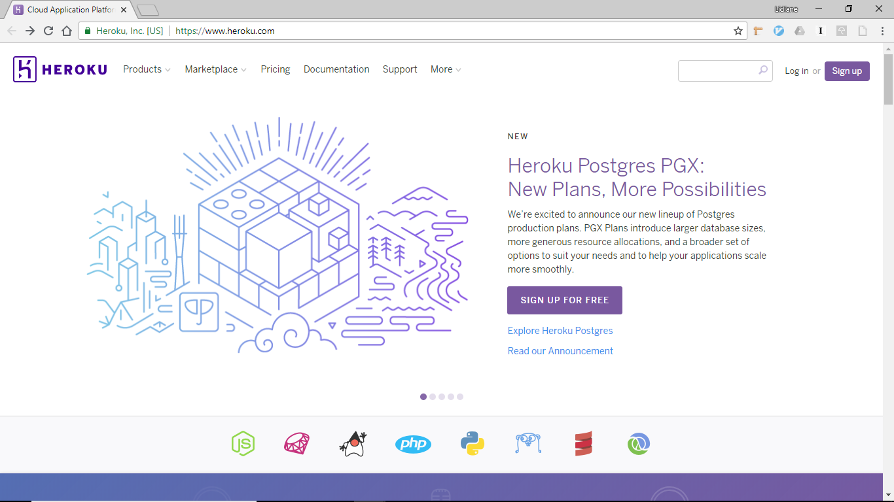
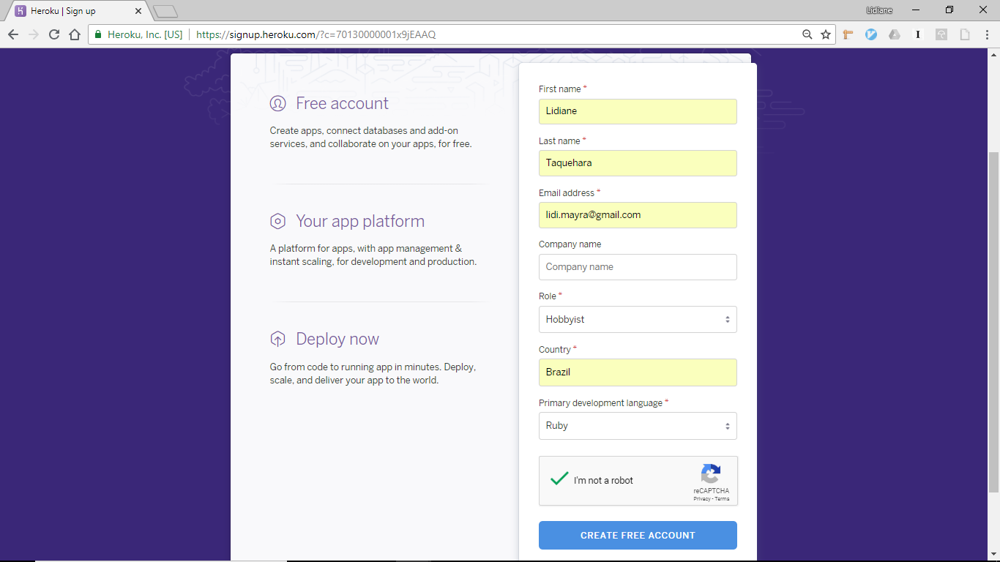
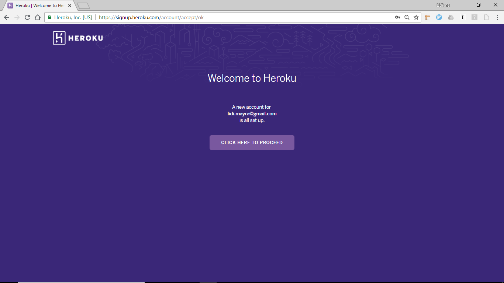

Hospedagem da aplicação na nuvem
Minas Programam: Curso de Back-end

Back-end
Minas Programam: Curso de Back-end
Acessem o site heroku.com e cliquem no botão Sign up for free.
Preencham o formulário de cadastro
O Heroku envia um e-mail contendo um link para ativação da conta. Ao ativar, é necessário definir uma senha.
A tela de boas-vindas indica que a nova conta já está ativa e pronta para uso!
Agora é necessário instalar o Heroku CLI para que possamos gerenciar o app no Heroku direto do terminal.
Acessem este site e façam o download do programa.
Abram o arquivo para iniciar a instalação

Após concluir a instalação, é necessário abrir uma nova janela do Prompt de Comando com Ruby e Rails para que seja possível utilizar o Heroku CLI.
Se instalado corretamente, o comando abaixo informará a versão em uso:
C:\Sites>heroku version
heroku/7.0.86 win32-x64 node-v10.1.0
C:\Sites\Blog>heroku login
heroku: Enter your login credentials
Email: lidi.mayra@gmail.com
Password: ************
Logged in as lidi.mayra@gmail.com
C:\Sites\blog>heroku keys:add
Found an SSH public key at C:\Users\Lidiane\.ssh\id_rsa.pub
? Would you like to upload it to Heroku? Yes
Uploading C:\Users\Lidiane\.ssh\id_rsa.pub SSH key... done
C:\Sites>
Por padrão, o projeto Rails vem configurado com o banco de dados sqlite3, que não é
suportado pelo Heroku.
Por este motivo, trocaremos o banco de produção para utilizar o PostgreSQL no lugar.
Abram o arquivo Gemfile e identifiquem a seguinte linha: gem 'sqlite3'
Removam esta linha substituindo pelo trecho abaixo:
group :development, :test do
gem 'sqlite3'
end
group :production do
gem 'pg'
end
Cada vez que o Gemfile é alterado, é necessário rodar o budnle install
C:\Sites\blog>bundle install
Abram o arquivo database.yml e identifiquem o trecho correspondente às configurações do banco de dados de produção:
production:
<<: *default
database: db/test.sqlite3
Estas 3 linhas devem ser removidas e substituídas pelo trecho presente no slide seguinte.
Configurações para o PostgreSQL
production:
adater: postgresql
database: db/production.psql
pool: 5
timeout: 5000
Vamos adicionar o add-on que possibilitar o suporte do PostgreSQL no Heroku:
C:\Sites\blog>heroku addons:create heroku-postgresql
Apenas as alterações presentes no repositorio git serão enviadas ao Heroku. Devemos adicionar tudo que já fizemos até o momento:
C:\Sites\blog>git add .
C:\Sites\blog>git commit -m 'Cadastro de posts'
Configuramos o banco de dados e adicionamos todos os estados do projeto ao repositório git. Agora vamos partir para o deploy (subir as alterações para o Heroku):
C:\Sites\blog>heroku create
C:\Sites\blog>git push heroku master
Assim como rodamos as migrações no ambiente de desenvolvimento, também precisamos executar estar etapa no ambiente de produção. Para isso, execute o comando:
C:\Sites\blog>heroku run rails db:migrate
Para conferir a aplicação disponível na web, execute o comando:
C:\Sites\blog>heroku open